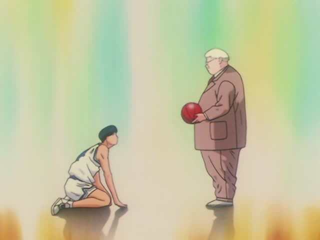
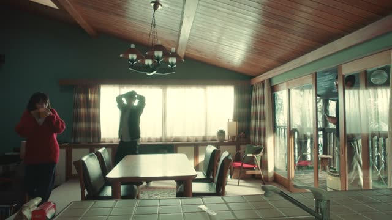

～たら
Noun or な-adjective? Add だった. Verb or い-adjective? Use the past form. Then ら.
| Word | Add | Ending | ||
|---|---|---|---|---|
| Noun | 学生 | だった | ら | If I were a student |
| な-adjective | 静か | だった | ら | If it's quiet |
| Verb | 行った | – | ら | If / when I go |
| い-adjective | 高かった | – | ら | If it's expensive |
Shirokuma Cafe · Episode 48
何か悩みがあったら聞きますよ。
"If something's bothering you, I'll listen."
～たら means "if" or "when, once": after the first thing happens, the second one follows. Take the past form and add ら: あった → あったら, 行った → 行ったら.
On this card, Shirokuma sees Handa spacing out and offers to listen if he has a worry. 聞きます makes it polite.
It's the most everyday "if". It also works for things that will surely happen: 家に帰ったら電話する, "when I get home, I'll call".

Slam Dunk · Episode 45
諦めたら、そこで試合終了だよ。
"If you give up, the game is over right there."
On this card, Coach Anzai says his most famous line to Mitsui. 諦めた → 諦めたら: once you give up, it's over.
Quick Examples
Making plans with a friend.
駅に着いたら電話して。
"Call me when you get to the station."
When it will surely happen: "when, once".
CasualYour coworker asks about the weekend.
雨だったら、家にいます。
"If it rains, I'll stay home."
After a noun: だったら.
PoliteShopping with a friend.
高かったら買わないよ。
"If it's expensive, I won't buy it."
CasualOffering help to a guest.
何かあったら、言ってくださいね。
"If anything comes up, just tell me."
PoliteWith and without
駅に着く。電話する。
"I'll get to the station. I'll call." Two separate facts.
駅に着いたら電話する。
"When I get to the station, I'll call." The call waits for the arrival.
Examples from Media
Samurai Champloo · Episode 15
縁があったら、また会いましょう。
"If fate allows, let's meet again."
Kekkon Dekinai Otoko · Episode 1
変なやつだったらどうしよう。
"What do I do if they're weird?"
About a new neighbor. After a noun: だったら.
Good Morning Call · Episode 9
お前らも暇だったら見に来いよ。
"If you guys are free, come and watch."
暇 is a な-adjective: 暇だったら.
Dungeon Meshi · Episode 3
猛毒とかだったらどうすんの？
"What if it's deadly poison or something?"
Death Note · Episode 1
万が一本当に死んだら、僕は殺人犯か？
"If he really died, does that make me a murderer?"
死んだ → 死んだら.
Aggretsuko · Season 1, Episode 9
気付いたら、家で寝てた。
"When I came to, I was asleep at home."
たら + a past ending: "when I did X, I found Y".
Brush Up Life · Episode 3
どうしたらいいと思う？
"What do you think I should do?"
どうしたらいい = what should I do.

Quartet · Episode 1
新幹線乗ったらするって。
"She says she'll call once she's on the bullet train."